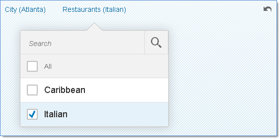

Facet Filter List and Facet Filter Item
The sap.m.FacetFilter control uses the FacetFilterList and the FacetFilterItem controls to model facets and their associated filters.
The facet filter list aggregation is a collection of facet filter list objects, where each element in the collection represents a different facet. Likewise, the facet filter list items aggregation is a collection of facet filter item objects where each element in the collection represents a different filter items available for the facet.
Facet Filter List
The FacetFilterList control extends and supports all the features of the sap.m.List control, for example swipe for action, growing feature, remember selections and grouping.
The following properties of FacetFilterList affect the display of lists in the FacetFilter control.
| Property | Description |
|---|---|
| title | Facet name |
| mode |
Controls the selection mode for the list This property is overridden from ListBase and only allows SingleSelectMaster or MultiSelect settings. MultiSelect is the default: This setting displays the All checkbox above the filter list to allow the user to select all filters. This does not actually select individual filters to avoid performance overhead for lists with a large number of items. |
| sequence |
Controls the order in which the facets are displayed in the toolbar Lists appear in the toolbar in ascending order according to sequence (assuming left to right). Lists with a sequence less than 0 are placed last, not before facets with sequence of zero. Only active lists are displayed regardless of sequence setting. |
| active | Indicates if a facet filter list is active and should appear on the toolbar; this is only applicable for the simple type as all facet filter lists are active in the light type |
| allCount | The allCount value can be set to the number of filter matches in the target data set given the currently selected filters for the facet filter list. |
Facet Filter Item
The FacetFilterItem control extends and supports all features of sap.m.ListItemBase, for example item selection and counter. FacetFilterItem provides the following properties:
| Property | Description |
|---|---|
| text | Filter item name |
| key |
Unique identifier of the filter item; used to filter the target data set If key is not set, text is used as the key value. |
Example
The following example shows how you use the controls. To build the face filter in the figure, use the code below the figure:

var oFacetFilter = new sap.m.FacetFilter({ // define FacetFilter Control
lists : [ new sap.m.FacetFilterList({ // city facet
title : "City",
items : [ new sap.m.FacetFilterItem({
text : "Waldorf",
key : "WDF"
}), new sap.m.FacetFilterItem({
selected : true, // filter is selected (from ListItemBase)
text : "Atlanta",
key : "ATL"
}) ]
}), new sap.m.FacetFilterList({ // restaurant facet
title : "Restaurants",
items : [ new sap.m.FacetFilterItem({
text : "Caribbean",
key : "CRB"
}), new sap.m.FacetFilterItem({
selected : true, // filter is selected (from ListItemBase)
text : "Italian",
key : "ITL"
}) ]
}) ]
});